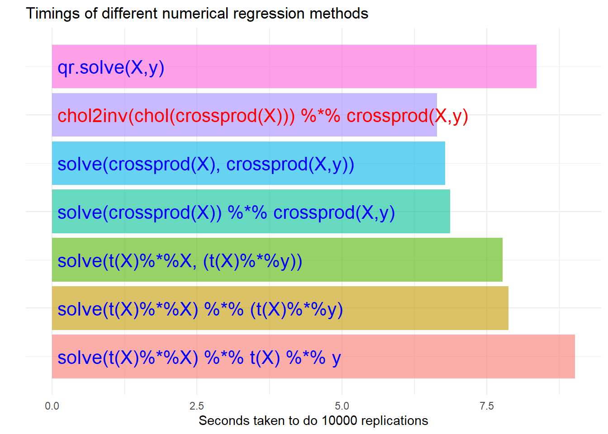

name_of_function <- function(function_arguments){
# Body of function where stuff is done
}Appendix B — Linear algebra
B.1 Modelling in economics is linear algebra
That’s a bit extreme, but you mostly need to do linear algebra to program up many of the estimators we need, or to solve a rational expectations models.
B.2 Beginning to program
A few non-linear algebra things we will need are summarized in the following table.
| R | Example | Notes | |
|---|---|---|---|
| Assign a value | <- |
a <- 4 |
Also legal is a = 4. But I hate it. |
| Create a list of values | c(.) |
v <- c(1, -2, 22) |
Defining ‘on the fly’ |
| Sequence | seq(i, k, l) |
\(5\), \(7\), … ,\(21\) | Create a sequence |
i:k |
\(i\), \(i\pm 1\), … ,\(k\) | Short cut for unit in/de-crements | |
| Loop commands | for (var in seq) expr |
for (i in 5:1) print(i) |
Loops. We need loops. |
| Draw a random number | rnorm(k,a,b) |
rnorm(60, 0, 5) |
Example draws 60 values ~ \(N(0,5)\) |
| Create a matrix | matrix(v,i,j) |
matrix(5, 2, 2) |
Create a \(2\times 2\) matrix of 5s |
B.2.1 Functions
Everything in R is a function (although it doesn’t look like it). Defining a function is simple:
Here’s one that actually does something:
addaddadd <- function(x,y){
z <- 3*(x+y)
return(z)
}and if we run it:
addaddadd(4,6)[1] 30B.3 Linear algebra
Assume the following: \(A\) and \(B\) are real matrices of dimension \(n\times n\), \(b\) and \(c\) are real \(n-\)vectors, \(X\) is a real \(T\times k\) matrix, and \(S\) is a symmetric real matrix.
| Maths | R | Notes | |
|---|---|---|---|
| Hadamard product | \(A\bigodot B\) | A * B |
Element-by-element, \(A\), \(B\) same size |
| Matrix/vector product | \(A\times B\), \(A \times b\) | A %*% B, A %*% b |
Normal product rule |
| Inner product | \(X'X\) | t(X) %*% X |
Also uses transpose operator, t() |
crossprod(X) |
More efficient, but less mathy | ||
| \(A'B\) | t(A) %*% B |
||
crossprod(A,B) |
|||
| Outer product | \(A\times B'\) | tcrossprod(A,B) |
|
| Inverse | \(A^{-1}\) | solve(A) |
Matrix inverse is a special case of… |
| Solve for \(d\) | \(Ad = b \Rightarrow d = A^{-1}b\) | d <- solve(A, b) |
…linear solution! |
| Cholesky decomp | \(S = R'R\) | R <- chol(S) |
\(S\) is a symmetric, positive definite matrix |
| Cholesky inverse | \(S^{-1}\) | chol2inv(R) |
Fast! |
| Determinant | \(\vert A \vert\) | det(A) |
|
| Diagonal | |||
| \(\quad\) of a matrix | diag(A) |
Retrieve the elements \(a_{ii}\), \(i=1,..,n\) | |
| \(\quad\) in a matrix | A <- diag(b) |
Set the diagonal of \(A\) to \(b\), zero elsewhere | |
| \(\quad\) Identity matrix | \(I_n\) | diag(n) |
|
| Eigenvalues/vectors | E <- eigen(A) |
Returns a list: E$values, E$vectors |
B.4 Starting to do linear algebra
B.4.1 Problem
Consider the following simultaneous system of equations:
\[\begin{align*} x_1 + 2x_2 &= 6 \\ x_1 - 3x_2 +2 x_3 &= 0 \\ -2 x_1 + 3 x_3 &= 2 \end{align*}\]
Find the values of \(x\) that solve this using R.
Hint – write the problem in matrix form
\[\begin{equation*} Ax = b \end{equation*}\]
where
\[\begin{equation*} A = \left [ \begin{array}{rrr} 1 & 2 & 0 \\ 1 & -3 & 2 \\ -2 & 0 & 3 \end{array} \right ], \qquad b = \left[ \begin{matrix}6 \\ 0 \\ 2\end{matrix} \right ] \end{equation*}\]
and then use solve.
B.4.2 Solution
R code to create these matrices is:
# Matrices are populated by column by default
A <- matrix(c(1,1,-2,2,-3,0,0,2,3),3,3)
b <- matrix(c(6,0,2),3,1)The solution is:
x <- solve(A,b)where x is:
[,1]
[1,] 2
[2,] 2
[3,] 2B.5 Eigenvalue decomposition
Any square matrix can be decomposed into a non-singular matrix \(V\) of eigenvectors and a diagonal matrix of eigenvalues \(\Lambda\) such that: \[\begin{equation}
A V = V \Lambda \Rightarrow A = V\Lambda V^{-1}
\end{equation}\] Call eigen to decompose our previously defined matrix \(A\)
e <- eigen(A)
L <- e$values # Returns a list, assign vectors/values
V <- e$vectorsNote \(A\) is not symmetric so it may have complex roots, which is does
L[1] -3.682744+0.000000i 2.341372+0.873683i 2.341372-0.873683iIf we calculate \(A = V\Lambda V^{-1}\) we get
s <- V %*% diag(L) %*% solve(V)
s [,1] [,2] [,3]
[1,] 1+0i 2.000000e+00+0i -2.220446e-16+0i
[2,] 1+0i -3.000000e+00+0i 2.000000e+00+0i
[3,] -2+0i -1.054712e-15+0i 3.000000e+00+0iand when we drop the zero imaginary parts
Re(s) [,1] [,2] [,3]
[1,] 1 2.000000e+00 -2.220446e-16
[2,] 1 -3.000000e+00 2.000000e+00
[3,] -2 -1.054712e-15 3.000000e+00Round to eliminate numerical error, to get
round(Re(s), digits=12) [,1] [,2] [,3]
[1,] 1 2 0
[2,] 1 -3 2
[3,] -2 0 3B.6 Precision
Why do we round? Take a real matrix \(A_{mn}\) with \(n \le m\) and pre-multiply by its own transpose, i.e. \(S = A'A\). \(AA\) is symmetric, positive semi-definite. If \(rank(A) = n\), then \(rank(S) = n\) and positive definite, and its inverse exists.
A <- matrix(c(1, .2, 0, 1), 2, 2)
S <- t(A) %*% A
S [,1] [,2]
[1,] 1.04 0.2
[2,] 0.20 1.0Let’s invert \(S\) three different ways.
i1 <- solve(S)
i2 <- chol2inv(chol(S))
i3 <- qr.solve(S) Pre-multiplying \(S\) by its inverse gives
\[\begin{equation} I_k = \left[\begin{matrix}1 &0 \\0 &1 \\\end{matrix}\right] \end{equation}\]
Looking at the results of doing this for each method gives
i1 %*% S [,1] [,2]
[1,] 1.000000e+00 0
[2,] 2.775558e-17 1i2 %*% S [,1] [,2]
[1,] 1 5.551115e-17
[2,] 0 1.000000e+00i3 %*% S [,1] [,2]
[1,] 1 -2.775558e-17
[2,] 0 1.000000e+00which are all slightly different but by tiny – and insignificant – amounts. Don’t be fooled by this, they are all numerically the same.
B.7 Programming the regression problem
Let’s look at the familiar regression problem for some generated data. \[\begin{equation} y = XB + \epsilon \end{equation}\] where \(\epsilon \sim N(0,.2)\), \(X\) is a \((k+1)\times n\) matrix of regressors including a constant and \(B\) a \(k+1\) vector of coefficients. Let’s generate some random data of an arbitrary sized problem:
X <- matrix(rnorm(180, 2, 1), 60, 3)
head(X, 6) # Print first six rows [,1] [,2] [,3]
[1,] 2.3588122 1.456386 2.3222084
[2,] 0.8413073 4.157710 3.5556043
[3,] 1.5474467 3.126836 2.7864946
[4,] 0.8815598 3.074986 2.9358657
[5,] 1.5360504 3.347174 0.4709853
[6,] 2.0862710 1.968519 2.6678894X <- cbind(1, X) # Add a constant
tail(X,6) # Print last six rows [,1] [,2] [,3] [,4]
[55,] 1 1.0427947 2.5979581 -0.316863
[56,] 1 2.0975083 0.8404734 2.742461
[57,] 1 1.9497584 2.4245861 2.885887
[58,] 1 -0.1817872 3.3655608 1.861405
[59,] 1 1.9967704 2.8199609 2.702852
[60,] 1 1.5975392 0.3822781 2.379031Now create a dependent variable that is a linear combination of these variables plus some noise. Create the linear relationship first so we know what it is:
B <- matrix(c(0.5,1,-1,.2), 4, 1)and then the dependent variable:
y <- X %*% B + 0.2*rnorm(60)We could now do a regression – i.e. calculate
\[\begin{equation} \hat B = (X'X)^{-1}X'y \end{equation}\]
which can be written:
Bhat <- solve(t(X)%*%X)%*%t(X)%*%ywhich gives
[,1]
[1,] 0.5222154
[2,] 0.9753704
[3,] -1.0346446
[4,] 0.2309827But I wouldn’t do it like this (we’ll see why in a minute). A better way would be
Bhat2 <- chol2inv(chol(crossprod(X))) %*% crossprod(X,y)or even
Bhat3 <- qr.solve(X,y)which both evaluate to the same \(\hat B\) values. Each is better in different circumstances.
B.7.1 Test timings
Why does it matter how you do things? It should be obvious that it might, but it turns out some fairly trivial things can make a lot of difference. We set some parameters so we can create a bigger problem.
n <- 400
k <- 12We will use seven different methods to calculate an estimate of \(B\). These are two variations on the three calculations below (where the brackets matter!): \[\begin{align}
\hat B_1 &= ((X'X)^{-1}) X'y \\
\hat B_2 &= ((X'X)^{-1}) (X'y) \\
\hat B_3 &= ((X'X)^{-1} (X'y))
\end{align}\] where we do each of these either ‘by hand’ or using crossprod, with a final solution using qr.solve.
library(tictoc)
reps <- 10000
t <- list()
set.seed(123)
tic()
for (i in 1:reps) {
B <- matrix(runif(k+1), k+1, 1)
X <- cbind(1L, matrix(rnorm(n*k, 2, 1), n, k))
y <- X %*% B + 0.2 * rnorm(n)
Bhat <- solve(t(X) %*% X) %*% t(X) %*% y
}
t[[1]] <- toc(quiet = TRUE)
set.seed(123)
tic()
for (i in 1:reps) {
B <- matrix(runif(k+1), k+1, 1)
X <- cbind(1L, matrix(rnorm(n*k, 2, 1), n, k))
y <- X %*% B + 0.2 * rnorm(n)
Bhata <- solve(t(X)%*%X) %*% (t(X)%*%y)
}
t[[2]] <- toc(quiet = TRUE)
set.seed(123)
tic()
for (i in 1:reps) {
B <- matrix(runif(k+1), k+1, 1)
X <- cbind(1L, matrix(rnorm(n*k, 2, 1), n, k))
y <- X %*% B + 0.2 * rnorm(n)
Bhatb <- solve((t(X) %*% X), (t(X) %*% y))
}
t[[3]] <- toc(quiet = TRUE)
set.seed(123)
tic()
for (i in 1:reps) {
B <- matrix(runif(k+1), k+1, 1)
X <- cbind(1L, matrix(rnorm(n*k, 2, 1), n, k))
y <- X %*% B + 0.2 * rnorm(n)
Bhat2 <- solve(crossprod(X)) %*% crossprod(X,y)
}
t[[4]] <- toc(quiet = TRUE)
set.seed(123)
tic()
for (i in 1:reps) {
B <- matrix(runif(k+1), k+1, 1)
X <- cbind(1L, matrix(rnorm(n*k, 2, 1), n, k))
y <- X %*% B + 0.2 * rnorm(n)
Bhat2a <- solve(crossprod(X), crossprod(X,y))
}
t[[5]] <- toc(quiet = TRUE)
set.seed(123)
tic()
for (i in 1:reps) {
B <- matrix(runif(k+1), k+1, 1)
X <- cbind(1L, matrix(rnorm(n*k, 2, 1), n, k))
y <- X %*% B + 0.2 * rnorm(n)
Bhat2b <- chol2inv(chol(crossprod(X))) %*% crossprod(X,y)
}
t[[6]] <- toc(quiet = TRUE)
set.seed(123)
tic()
for (i in 1:reps) {
B <- matrix(runif(k+1), k+1, 1)
X <- cbind(1L, matrix(rnorm(n*k, 2, 1), n, k))
y <- X %*% B + 0.2 * rnorm(n)
Bhat3 <- qr.solve(X,y)
}
t[[7]] <- toc(quiet = TRUE)How do we display the timings we saved in t? We could do a simple (but dull) table, or something a bit nicer.
library(tidyverse)
FF <- c("solve(t(X)%*%X) %*% t(X) %*% y",
"solve(t(X)%*%X) %*% (t(X)%*%y)",
"solve(t(X)%*%X, (t(X)%*%y))",
"solve(crossprod(X)) %*% crossprod(X,y)",
"solve(crossprod(X), crossprod(X,y))",
"chol2inv(chol(crossprod(X))) %*% crossprod(X,y)",
"qr.solve(X,y)")
tms <- as.numeric(gsub(" sec elapsed", "", unlist(t)[seq(3,21,3)]))
v <- tibble(Method = 1:7,
Times = tms,
Formula = FF) %>%
mutate(Col = case_when(Times == min(Times) ~ "red",
TRUE ~ "blue"
))
ggplot(v) +
geom_col(aes(x=Method, y=Times, fill=as.factor(Method)), alpha=.6) +
geom_text(aes(x=Method, y=.1, label=Formula, color=Col), size=5.5, hjust=0) +
theme_minimal() +
scale_color_identity() +
theme(legend.position = "none") +
theme(axis.text.y = element_blank()) +
coord_flip() +
labs(y=paste("Seconds taken to do",reps,"replications"), x="",
title="Timings of different numerical regression methods")